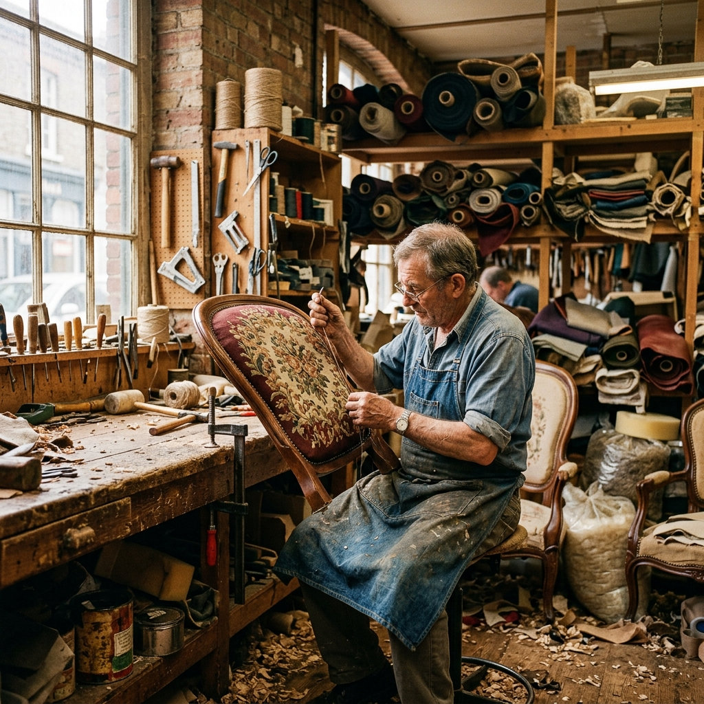
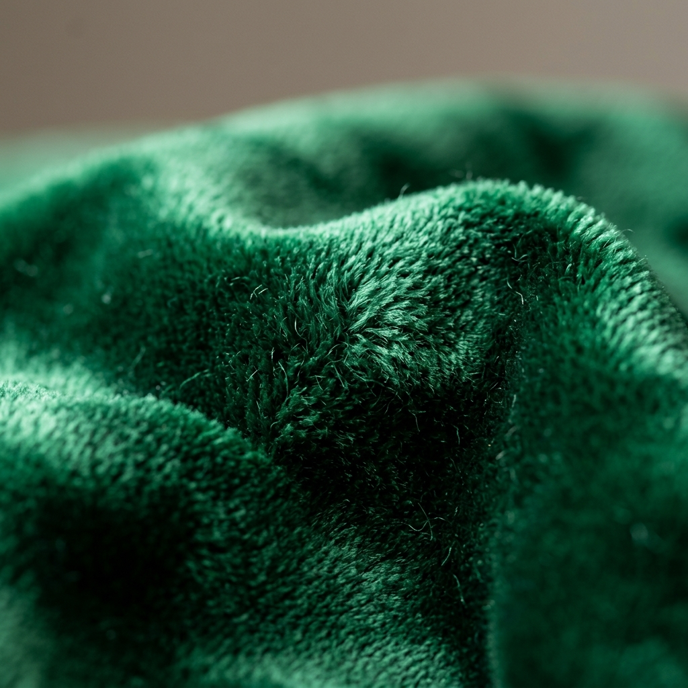

Lifetime structural warranty
Every frame we rebuild, straighten or replace is guaranteed for life. Our springs are eight-way hand-tied; our joinery is dowelled and glued, never stapled into a carcass.


ReVox began in 1998 with one sewing machine, one frame, and a queue of Mylapore neighbours asking us to make a tired sofa new again. Two and a half decades later, that same bench principle still drives everything we do.
Today we are an 18-artisan atelier on Artisan Lane — restoring sofas for Chennai families, re-skinning suites for five-star hotels, and conserving colonial teak for heritage homes. Same hands. Same patience. Only bigger.

We never ask what a sofa cost. We ask what it meant to the family that sat on it. That is the only price tag that matters on our bench.
Krishnaswamy Pillai Founder & Master Upholsterer, ReVox
From a single-frame room in Mylapore to a full atelier — the milestones that shaped how we work today.
Krishnaswamy Pillai opens a one-room workshop with a single industrial sewing machine. The first commission is a neighbour's torn cane sofa; the first rule — never discard sound timber — is written on the wall and never erased.
ReVox moves into a 1,200 sq ft unit on Artisan Lane and hires its first four apprentices. Cutting tables, a dedicated frame bay and a proper leather rack turn the craft into a craft that could be taught.
Our first hotel programme lands — and with it, a very different brief: 40 suites, banquet seating and airline lounges reupholstered on a staggered deadline. We learn to plan a project like a production line without ever making it feel mass-produced.
We are asked to conserve nineteenth-century colonial teak and rosewood for landmark homes and city museums. Hand-carved motifs, horsehair stuffing, old nails — nothing is replaced that can be saved, nothing is repaired that cannot be trusted.
Second-generation upholsterers join the floor and a dedicated repair and frame-restoration bay opens — because the smartest, most sustainable fix is the one that keeps a piece in your home instead of a landfill.
Twenty-five years on, the workshop marks its silver jubilee with a community restoration bench — a free service for Chennai school and college furniture, upholstered by our apprentices under supervision.
These are not slogans on the wall. They are the four checks every job passes before it leaves the bench.
Every frame we rebuild, straighten or replace is guaranteed for life. Our springs are eight-way hand-tied; our joinery is dowelled and glued, never stapled into a carcass.
You receive a written, itemised quote — fabric, labour, frame work, delivery — before a single stitch goes in. The number we agree is the number you pay.
If the timber is sound, we keep it. Reupholstering a frame rather than replacing a piece is the most sustainable thing you can do with furniture — and usually the most beautiful.
No piece leaves the workshop until a master upholsterer has signed the job card. We work by the piece, not by the clock — which is why our lead times are honest.
Fabric is the soul of a piece. We keep our stockroom small and deliberate — a few hundred bolts, swatched and hand-picked, so that what you touch in the showroom is what arrives at your door.
Every hide and every metre is inspected under daylight before it is cut. If a bolt has a flaw, it goes to the offcuts shelf, not onto your sofa.




Bring your sofa, your chair, or simply your questions. Sit on the samples, meet the upholsterers, and leave with a plan and a price — no obligation.